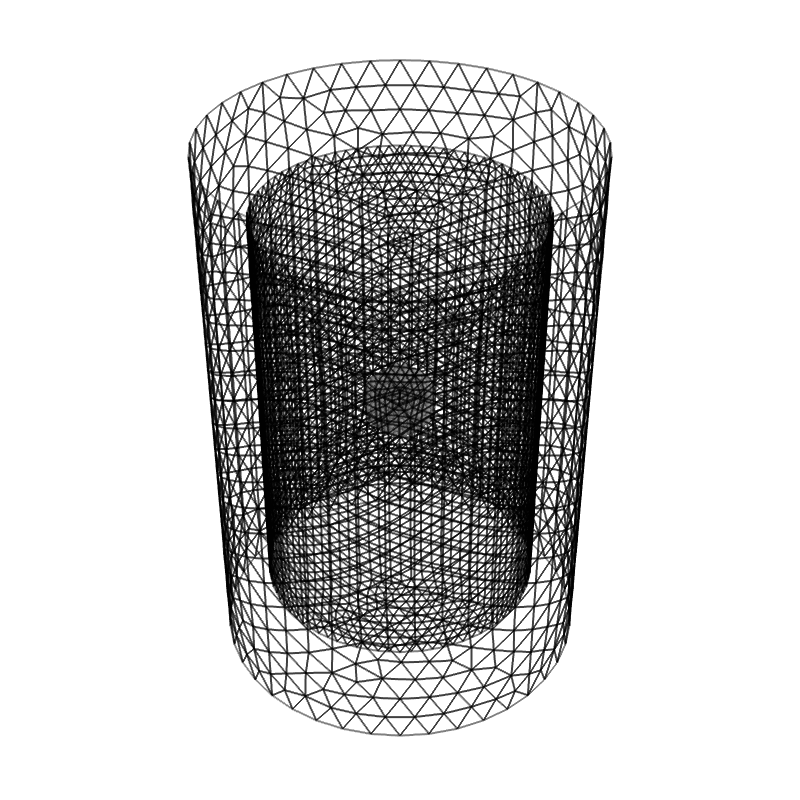
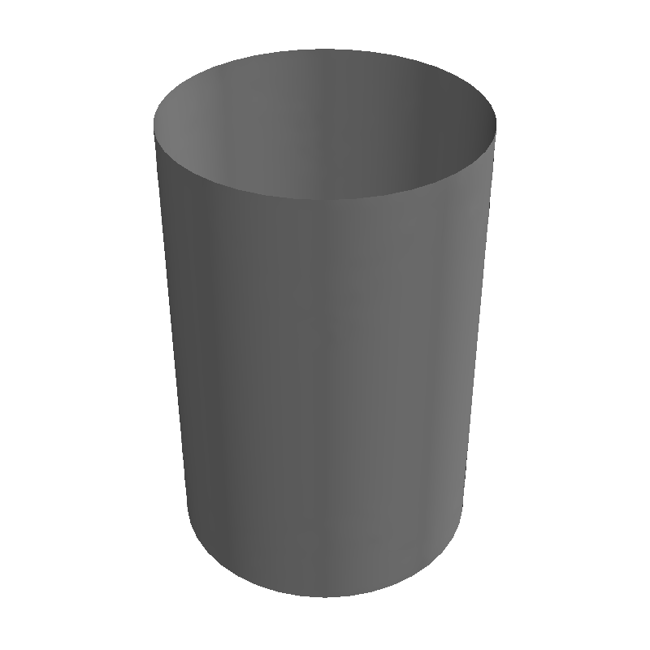
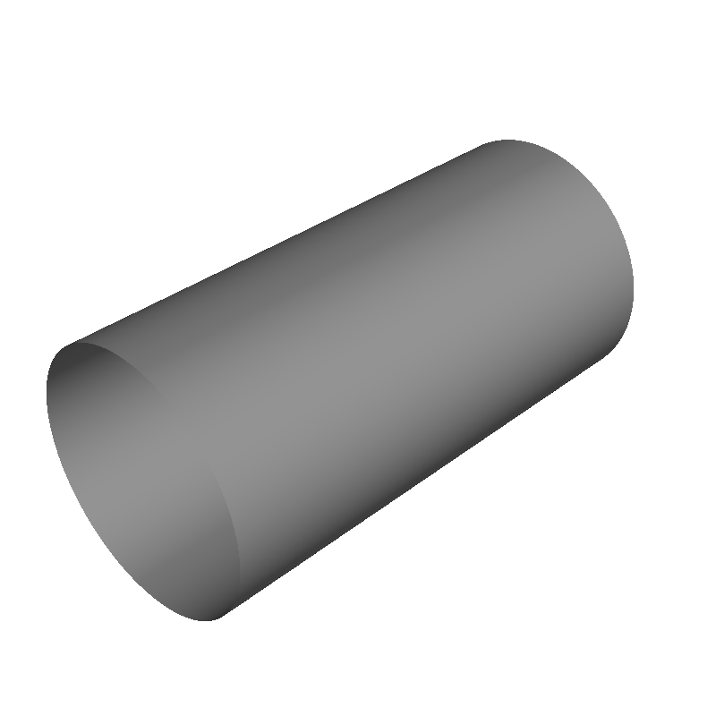

Note
Click here to download the full example code
Coil with minimal eddy currents¶
Compact example of design of a cylindrical coil surrounded by a RF shield, i.e. a conductive surface. The effects of eddy currents due to inductive interaction with the shield is minimized
import numpy as np
from mayavi import mlab
import trimesh
from bfieldtools.conductor import Conductor
from bfieldtools.coil_optimize import optimize_streamfunctions
from bfieldtools.contour import scalar_contour
from bfieldtools.viz import plot_3d_current_loops, plot_data_on_vertices
import pkg_resources
from pyface.api import GUI
_gui = GUI()
# Set unit, e.g. meter or millimeter.
# This doesn't matter, the problem is scale-invariant
scaling_factor = 1
# Load example coil mesh that is centered on the origin
coilmesh = trimesh.load(
file_obj=pkg_resources.resource_filename(
"bfieldtools", "example_meshes/open_cylinder.stl"
),
process=True,
)
angle = np.pi / 2
rotation_matrix = np.array(
[
[np.cos(angle), 0, np.sin(angle), 0],
[0, 1, 0, 0],
[-np.sin(angle), 0, np.cos(angle), 0],
[0, 0, 0, 1],
]
)
coilmesh.apply_transform(rotation_matrix)
coilmesh1 = coilmesh.copy()
# coilmesh1.apply_scale(1.3)
coilmesh2 = coilmesh.copy()
# coilmesh1 = coilmesh.union(coilmesh1)
# coilmesh1 = coilmesh1.subdivide().subdivide()
# coilmesh2 = coilmesh.subdivide()
# Create mesh class object
coil = Conductor(
verts=coilmesh1.vertices * 0.75,
tris=coilmesh1.faces,
fix_normals=True,
basis_name="suh",
N_suh=400,
)
def alu_sigma(T):
ref_T = 293 # K
ref_rho = 2.82e-8 # ohm*meter
alpha = 0.0039 # 1/K
rho = alpha * (T - ref_T) * ref_rho + ref_rho
return 1 / rho
resistivity = 1 / alu_sigma(T=293) # room-temp Aluminium
thickness = 0.5e-3 # 0.5 mm thick
# Separate object for shield geometry
shield = Conductor(
verts=coilmesh2.vertices.copy() * 1.1,
tris=coilmesh2.faces.copy(),
fix_normals=True,
basis_name="inner",
resistivity=resistivity,
thickness=thickness,
)
Out:
face_normals didn't match triangles, ignoring!
Calculating surface harmonics expansion...
Computing the laplacian matrix...
Computing the mass matrix...
Set up target points and plot geometry
# Here, the target points are on a volumetric grid within a sphere
center = np.array([0, 0, 0])
sidelength = 0.25 * scaling_factor
n = 12
xx = np.linspace(-sidelength / 2, sidelength / 2, n)
yy = np.linspace(-sidelength / 2, sidelength / 2, n)
zz = np.linspace(-sidelength / 2, sidelength / 2, n)
X, Y, Z = np.meshgrid(xx, yy, zz, indexing="ij")
x = X.ravel()
y = Y.ravel()
z = Z.ravel()
target_points = np.array([x, y, z]).T
# Turn cube into sphere by rejecting points "in the corners"
target_points = (
target_points[np.linalg.norm(target_points, axis=1) < sidelength / 2] + center
)
# Plot coil, shield and target points
f = mlab.figure(None, bgcolor=(1, 1, 1), fgcolor=(0.5, 0.5, 0.5), size=(800, 800))
coil.plot_mesh()
shield.plot_mesh()
mlab.points3d(*target_points.T)
- 
- 
- 
Out:
<mayavi.modules.glyph.Glyph object at 0x0000025409DAE830>
Compute C matrices that are used to compute the generated magnetic field
mutual_inductance = coil.mutual_inductance(shield)
# Take into account the field produced by currents induced into the shield
# NB! This expression is for instantaneous step-function switching of coil current, see Eq. 18 in G.N. Peeren, 2003.
shield.M_coupling = np.linalg.solve(-shield.inductance, mutual_inductance.T)
secondary_C = shield.B_coupling(target_points) @ -shield.M_coupling
Out:
Estimating 69923 MiB required for 4764 by 4764 vertices...
Computing inductance matrix in 180 chunks (8637 MiB memory free), when approx_far=True using more chunks is faster...
Computing 1/r-potential matrix
Computing the inductance matrix...
Computing self-inductance matrix using rough quadrature (degree=2). For higher accuracy, set quad_degree to 4 or more.
Estimating 69923 MiB required for 4764 by 4764 vertices...
Computing inductance matrix in 180 chunks (8634 MiB memory free), when approx_far=True using more chunks is faster...
Computing 1/r-potential matrix
Inductance matrix computation took 76.07 seconds.
Computing magnetic field coupling matrix, 4764 vertices by 672 target points... took 1.61 seconds.
Create bfield specifications used when optimizing the coil geometry
# The absolute target field amplitude is not of importance,
# and it is scaled to match the C matrix in the optimization function
target_field = np.zeros(target_points.shape)
target_field[:, 1] = target_field[:, 1] + 1
target_spec = {
"coupling": coil.B_coupling(target_points),
"abs_error": 0.01,
"target": target_field,
}
from scipy.linalg import eigh
l, U = eigh(shield.resistance, shield.inductance, eigvals=(0, 500))
#
# U = np.zeros((shield.inductance.shape[0], len(li)))
# U[shield.inner_verts, :] = Ui
#
# plt.figure()
# plt.plot(1/li)
# shield.M_coupling = np.linalg.solve(-shield.inductance, mutual_inductance.T)
# secondary_C = shield.B_coupling(target_points) @ -shield.M_coupling
#
# tmin, tmax = 0.001, 0.001
# Fs=10000
time = [0.001, 0.003, 0.005]
eddy_error = [0.05, 0.01, 0.0025]
# time_decay = U @ np.exp(-l[None, :]*time[:, None]) @ np.pinv(U)
time_decay = np.zeros(
(len(time), shield.inductance.shape[0], shield.inductance.shape[1])
)
induction_spec = []
Uinv = np.linalg.pinv(U)
for idx, t in enumerate(time):
time_decay = U @ np.diag(np.exp(-l * t)) @ Uinv
eddy_coupling = shield.B_coupling(target_points) @ time_decay @ shield.M_coupling
induction_spec.append(
{
"coupling": eddy_coupling,
"abs_error": eddy_error[idx],
"rel_error": 0,
"target": np.zeros_like(target_field),
}
)
Out:
Computing magnetic field coupling matrix, 4764 vertices by 672 target points... took 1.70 seconds.
Computing the resistance matrix...
Run QP solver
import mosek
coil.s, prob = optimize_streamfunctions(
coil,
[target_spec] + induction_spec,
objective="minimum_inductive_energy",
solver="MOSEK",
solver_opts={"mosek_params": {mosek.iparam.num_threads: 8}},
)
from bfieldtools.conductor import StreamFunction
shield.induced_s = StreamFunction(shield.M_coupling @ coil.s, shield)
Out:
Computing the inductance matrix...
Computing self-inductance matrix using rough quadrature (degree=2). For higher accuracy, set quad_degree to 4 or more.
Estimating 69923 MiB required for 4764 by 4764 vertices...
Computing inductance matrix in 200 chunks (7579 MiB memory free), when approx_far=True using more chunks is faster...
Computing 1/r-potential matrix
Inductance matrix computation took 77.12 seconds.
Pre-existing problem not passed, creating...
Passing parameters to problem...
Passing problem to solver...
Problem
Name :
Objective sense : min
Type : CONIC (conic optimization problem)
Constraints : 16530
Cones : 1
Scalar variables : 803
Matrix variables : 0
Integer variables : 0
Optimizer started.
Problem
Name :
Objective sense : min
Type : CONIC (conic optimization problem)
Constraints : 16530
Cones : 1
Scalar variables : 803
Matrix variables : 0
Integer variables : 0
Optimizer - threads : 8
Optimizer - solved problem : the dual
Optimizer - Constraints : 401
Optimizer - Cones : 1
Optimizer - Scalar variables : 16530 conic : 402
Optimizer - Semi-definite variables: 0 scalarized : 0
Factor - setup time : 0.31 dense det. time : 0.00
Factor - ML order time : 0.00 GP order time : 0.00
Factor - nonzeros before factor : 8.06e+04 after factor : 8.06e+04
Factor - dense dim. : 0 flops : 1.38e+09
ITE PFEAS DFEAS GFEAS PRSTATUS POBJ DOBJ MU TIME
0 3.2e+01 1.0e+00 2.0e+00 0.00e+00 0.000000000e+00 -1.000000000e+00 1.0e+00 5.73
1 1.7e+01 5.3e-01 1.2e+00 -6.72e-01 9.010357633e+01 8.973633378e+01 5.3e-01 5.86
2 1.1e+01 3.3e-01 7.9e-01 -4.09e-01 3.094011150e+02 3.094040053e+02 3.3e-01 5.97
3 6.3e+00 2.0e-01 4.7e-01 -1.46e-01 1.474734387e+03 1.474971280e+03 2.0e-01 6.11
4 3.4e+00 1.1e-01 3.1e-01 -3.73e-01 2.889963554e+03 2.891030973e+03 1.1e-01 6.23
5 1.7e+00 5.3e-02 1.2e-01 3.70e-02 1.176932710e+04 1.176989190e+04 5.3e-02 6.34
6 4.8e-01 1.5e-02 2.4e-02 2.17e-01 2.077401084e+04 2.077442344e+04 1.5e-02 6.51
7 2.5e-01 7.9e-03 1.1e-02 6.38e-01 2.410348577e+04 2.410383935e+04 7.9e-03 6.64
8 2.2e-01 6.8e-03 9.4e-03 6.15e-01 2.488708711e+04 2.488743067e+04 6.8e-03 6.73
9 8.0e-02 2.5e-03 2.5e-03 6.69e-01 2.834583457e+04 2.834602810e+04 2.5e-03 6.89
10 5.7e-02 1.8e-03 1.6e-03 6.50e-01 2.907195903e+04 2.907212572e+04 1.8e-03 7.00
11 8.5e-03 2.6e-04 1.2e-04 7.66e-01 3.122455504e+04 3.122459728e+04 2.6e-04 7.13
12 2.1e-03 6.5e-05 1.5e-05 9.68e-01 3.164292971e+04 3.164294065e+04 6.5e-05 7.23
13 3.7e-04 1.2e-05 1.1e-06 9.62e-01 3.176359634e+04 3.176359820e+04 1.2e-05 7.34
14 1.8e-05 5.6e-07 8.4e-08 9.88e-01 3.178831923e+04 3.178831924e+04 5.6e-07 7.47
15 3.4e-05 1.4e-07 6.8e-09 1.00e+00 3.178957314e+04 3.178957311e+04 2.7e-08 7.67
16 1.6e-05 7.6e-08 2.8e-09 1.00e+00 3.178960106e+04 3.178960104e+04 1.5e-08 7.89
17 8.1e-06 4.4e-08 1.7e-09 1.00e+00 3.178961640e+04 3.178961642e+04 8.2e-09 8.14
18 2.0e-06 3.7e-08 3.7e-10 1.00e+00 3.178961848e+04 3.178961848e+04 7.3e-09 8.38
19 2.0e-06 3.7e-08 3.7e-10 1.00e+00 3.178961848e+04 3.178961848e+04 7.3e-09 8.69
20 2.0e-06 3.7e-08 3.7e-10 1.00e+00 3.178961848e+04 3.178961848e+04 7.3e-09 9.02
Optimizer terminated. Time: 9.48
Interior-point solution summary
Problem status : PRIMAL_AND_DUAL_FEASIBLE
Solution status : OPTIMAL
Primal. obj: 3.1789618477e+04 nrm: 6e+04 Viol. con: 1e-07 var: 0e+00 cones: 0e+00
Dual. obj: 3.1789618482e+04 nrm: 4e+05 Viol. con: 0e+00 var: 5e-07 cones: 0e+00
Plot coil windings and target points
loops = scalar_contour(coil.mesh, coil.s.vert, N_contours=6)
f = mlab.figure(None, bgcolor=(1, 1, 1), fgcolor=(0.5, 0.5, 0.5), size=(600, 500))
mlab.clf()
plot_3d_current_loops(loops, colors="auto", figure=f, tube_radius=0.005)
B_target = coil.B_coupling(target_points) @ coil.s
mlab.quiver3d(*target_points.T, *B_target.T)
shield.plot_mesh(
representation="surface",
opacity=0.5,
cull_back=True,
color=(0.8, 0.8, 0.8),
figure=f,
)
shield.plot_mesh(
representation="surface",
opacity=1,
cull_front=True,
color=(0.8, 0.8, 0.8),
figure=f,
)
f.scene.camera.parallel_projection = 1
f.scene.camera.zoom(1.4)
For comparison, let’s see how the coils look when we ignore the conducting shield
coil.unshielded_s, coil.unshielded_prob = optimize_streamfunctions(
coil,
[target_spec],
objective="minimum_inductive_energy",
solver="MOSEK",
solver_opts={"mosek_params": {mosek.iparam.num_threads: 8}},
)
shield.unshielded_induced_s = StreamFunction(
shield.M_coupling @ coil.unshielded_s, shield
)
loops = scalar_contour(coil.mesh, coil.unshielded_s.vert, N_contours=6)
f = mlab.figure(None, bgcolor=(1, 1, 1), fgcolor=(0.5, 0.5, 0.5), size=(600, 500))
mlab.clf()
plot_3d_current_loops(loops, colors="auto", figure=f, tube_radius=0.005)
B_target_unshielded = coil.B_coupling(target_points) @ coil.unshielded_s
mlab.quiver3d(*target_points.T, *B_target_unshielded.T)
shield.plot_mesh(
representation="surface",
opacity=0.5,
cull_back=True,
color=(0.8, 0.8, 0.8),
figure=f,
)
shield.plot_mesh(
representation="surface",
opacity=1,
cull_front=True,
color=(0.8, 0.8, 0.8),
figure=f,
)
f.scene.camera.parallel_projection = 1
f.scene.camera.zoom(1.4)
Out:
Pre-existing problem not passed, creating...
Passing parameters to problem...
Passing problem to solver...
Problem
Name :
Objective sense : min
Type : CONIC (conic optimization problem)
Constraints : 4434
Cones : 1
Scalar variables : 803
Matrix variables : 0
Integer variables : 0
Optimizer started.
Problem
Name :
Objective sense : min
Type : CONIC (conic optimization problem)
Constraints : 4434
Cones : 1
Scalar variables : 803
Matrix variables : 0
Integer variables : 0
Optimizer - threads : 8
Optimizer - solved problem : the dual
Optimizer - Constraints : 401
Optimizer - Cones : 1
Optimizer - Scalar variables : 4434 conic : 402
Optimizer - Semi-definite variables: 0 scalarized : 0
Factor - setup time : 0.08 dense det. time : 0.00
Factor - ML order time : 0.00 GP order time : 0.00
Factor - nonzeros before factor : 8.06e+04 after factor : 8.06e+04
Factor - dense dim. : 0 flops : 4.09e+08
ITE PFEAS DFEAS GFEAS PRSTATUS POBJ DOBJ MU TIME
0 3.2e+01 1.0e+00 2.0e+00 0.00e+00 0.000000000e+00 -1.000000000e+00 1.0e+00 1.31
1 2.5e+01 7.8e-01 2.4e-01 2.21e+00 3.593826162e+01 3.519299142e+01 7.8e-01 1.34
2 1.3e+00 4.1e-02 6.5e-03 1.32e+00 4.734603179e+01 4.732222334e+01 4.1e-02 1.38
3 9.6e-02 3.0e-03 8.6e-05 1.06e+00 4.632816253e+01 4.632628348e+01 3.0e-03 1.42
4 1.8e-02 5.7e-04 8.6e-06 1.00e+00 4.627985018e+01 4.627950400e+01 5.7e-04 1.45
5 1.6e-04 5.0e-06 7.9e-09 1.00e+00 4.628322195e+01 4.628321901e+01 5.0e-06 1.50
6 4.9e-06 1.5e-07 4.2e-11 1.00e+00 4.628333802e+01 4.628333793e+01 1.5e-07 1.53
7 2.5e-06 7.6e-08 1.4e-11 1.00e+00 4.628334009e+01 4.628334005e+01 7.6e-08 1.58
8 1.2e-06 3.8e-08 5.9e-12 1.00e+00 4.628334113e+01 4.628334110e+01 3.8e-08 1.64
9 6.2e-07 1.9e-08 8.1e-13 1.00e+00 4.628334164e+01 4.628334164e+01 1.9e-08 1.69
Optimizer terminated. Time: 1.74
Interior-point solution summary
Problem status : PRIMAL_AND_DUAL_FEASIBLE
Solution status : OPTIMAL
Primal. obj: 4.6283341645e+01 nrm: 9e+01 Viol. con: 7e-09 var: 0e+00 cones: 0e+00
Dual. obj: 4.6283341641e+01 nrm: 4e+01 Viol. con: 1e-07 var: 3e-10 cones: 0e+00
Finally, let’s compare the time-courses
tmin, tmax = 0, 0.025
Fs = 2000
time = np.linspace(tmin, tmax, int(Fs * (tmax - tmin) + 1))
time_decay = np.zeros(
(len(time), shield.inductance.shape[0], shield.inductance.shape[1])
)
Uinv = np.linalg.pinv(U)
for idx, t in enumerate(time):
time_decay[idx] = U @ np.diag(np.exp(-l * t)) @ Uinv
B_t = shield.B_coupling(target_points) @ (time_decay @ shield.induced_s).T
unshieldedB_t = (
shield.B_coupling(target_points) @ (time_decay @ shield.unshielded_induced_s).T
)
import matplotlib.pyplot as plt
fig, ax = plt.subplots(1, 1, sharex=True, figsize=(8, 4))
ax.plot(
time * 1e3,
np.mean(np.linalg.norm(B_t, axis=1), axis=0).T,
"k-",
label="Minimized",
linewidth=1.5,
)
ax.set_ylabel("Transient field amplitude")
ax.semilogy(
time * 1e3,
np.mean(np.linalg.norm(unshieldedB_t, axis=1), axis=0).T,
"k--",
label="Ignored",
linewidth=1.5,
)
ax.set_xlabel("Time (ms)")
ax.set_ylim(1e-4, 0.5)
ax.set_xlim(0, 25)
plt.grid(which="both", axis="y", alpha=0.1)
plt.legend()
fig.tight_layout()
ax.vlines([1, 5, 10, 20], 1e-4, 0.5, alpha=0.1, linewidth=3, color="r")
Out:
<matplotlib.collections.LineCollection object at 0x0000025400F126A0>
Total running time of the script: ( 5 minutes 52.473 seconds)